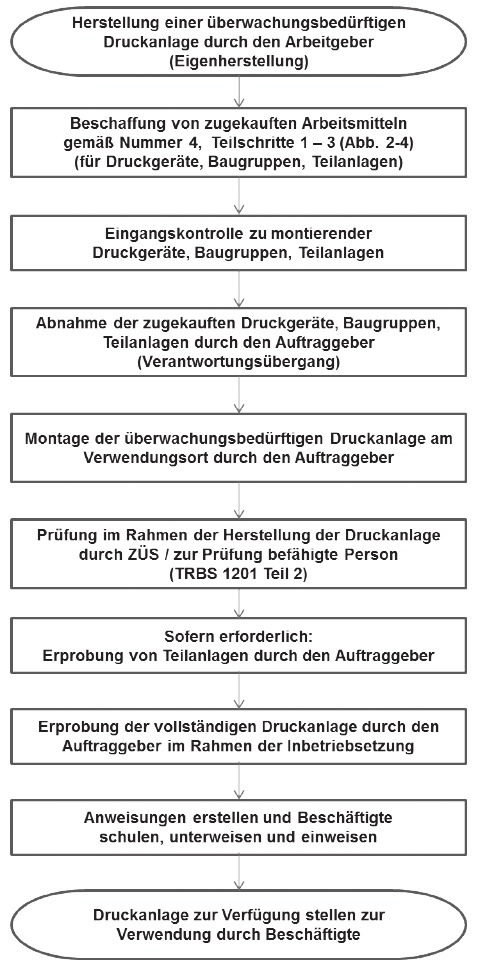

1. Bedarf ermitteln und Anforderungsliste erstellen
Arbeitsaufgabe und Umgebungsbedingungen analysieren und festlegen der Anforderungen
Die Analyse der Arbeitsaufgabe und Umgebungsbedingungen muss zuerst nachweisen, dass andere Arbeitsmittel keine geeigneten Alternativen zum Einsatz einer Leiter darstellen.
Für welche Arbeitsaufgaben (inkl. Arbeitsweise und ergonomische Bedingungen, Benutzungsdauer und Traglast) und unter welchen Umgebungsbedingungen eine Leiter benutzt werden soll, ist entscheidend für die Auswahl der Art der Leiter.
Die entsprechenden Informationen müssen im Betrieb beschafft, die Gefährdungen ermittelt und bewertet sowie Maßnahmen (siehe auch Teilschritt 4: Arbeitsmittel zur Verfügung stellen) festgelegt werden.
Informationsquellen zu den rechtlichen Anforderungen und Handlungshilfen für die Analyse und Festlegung der Anforderungen:
Bauart, Größe, Stabilität, Werkstoff, Zubehör und Anzahl festlegen
Größe, Werkstoff und benötigtes Zubehör beeinflussen die Festlegung der Bauart.
Bauartbeispiele:
Größe:
Werkstoff:
Je nach Umgebungsbedingungen sind Leitern aus entsprechendem Werkstoff auszuwählen. Beispiele für Umgebungsbedingungen: starke Verschmutzung, rauer Betrieb, hohe Luftfeuchtigkeit, elektrostatische Aufladung.
Zubehör:
Stabilität und Gebrauchstauglichkeit:
Anzahl:
Je nach Arbeitsaufgabe, Benutzungshäufigkeit und Entfernung der Arbeitsbereiche ergibt sich die benötigte Anzahl an Leitern.
Anforderungsliste erstellen
Beispiel für einen Anforderungskatalog für die Beschaffung
einer Leiter:
„Zwei stabile Anlegeleitern aus Aluminium mit acht Stufen,
Zubehör: Je ein Seitengeländer“.
2. Arbeitsmittel und Lieferanten auswählen
Beschaffungsmarkt analysieren und Angebote einholen
Produkt- und Lieferantenrecherche: Welche Hersteller und Produkte sind über welche Bezugsquellen verfügbar (Fachhandel, Baumarkt, Direktverkauf Hersteller)?
Herausarbeiten und Bewerten von Unterschieden in den Angeboten.
GS-Zeichen vorhanden?
Abgleich mit Anforderungsliste
Auswahl
Festlegen, welches Produkt welches Herstellers von welchem Lieferanten beschafft werden soll.
3. Auftrag erteilen
Erteilen des Auftrags bzw. Einkauf im Handel.
4. Arbeitsmittel zur Verfügung stellen
Eingangskontrolle:
Gelieferte/gekaufte Leiter prüfen, ob sie mit der Auswahl übereinstimmt und die Lieferung vollständig ist (Kennzeichnungen, ggf. bestelltes Zubehör mitgeliefert). Überprüfen, ob die gelieferte Leiter beschädigt oder verformt ist, ob scharfe Kanten vorhanden sind etc.
Letzten Teilschritt der Gefährdungsbeurteilung durchführen
1. Bedarf ermitteln und Anforderungsliste erstellen
Einsatzbedingungen:
Fahrleistung/-Profil: dauerhafter Einsatz (Fahrbetrieb), wechselnde Fahrer, spezifische Besonderheiten (Baustelleneinsatz, häufiges Einparken oder Rangieren), erforderliche Kommunikationseinrichtungen, Anzahl der mitfahrenden Personen; einzuhaltende Abmessungen; vorgesehene Einsatzdauer;
Ladegut: Verwendung von Ladungsträgern (Paletten, Boxen, Säcke), hygienische Anforderungen, Temperaturführung oder Isolierung, Ladungssicherung, Anhängerbetrieb; sonstige Staumöglichkeiten, Ablagen und Fächer; Kommissionierungssysteme; erforderliche Zuladung;
Be- und Entladen: Ein- und Aussteigen, Benutzung von Hilfsmitteln (Adaptierung: Flurförderzeug, Transportwagen, Förderbänder oder Rutschen), Ladungssicherung, Kommissionierungssysteme, häufiges Anhalten im fließenden Verkehr (Ausstieg rechts, Durchgang zum Laderaum), Trennwand zum Laderaum (Höhe, Fenster); Beleuchtung im Fahrzeug und ggf. in Arbeits- und Verkehrsbereichen;
Zusätzliche Ausrüstungen: Abstimmung mit Lieferant von zusätzlichen Ausrüstungen;
Verkehrssicherheit:
lichttechnische Einrichtungen (auch bei geöffneten Türen, Klappen etc. zu sehen?); Reflektoren, Konturmarkierungen; Klimaanlage; Freisprecheinrichtung; Sicherheitssysteme; Navigationssystem; Rangierwarneinrichtung; Kamerasysteme;
Arbeitssicherheit:
Bedienungsergonomie; Sichtfeld; Sitzergonomie; Klimaanlage; Standheizung; Innengeräusche; Ein- und Ausstiege; Haltegriffe; Sicherheitskennzeichnung; Bedienhinweise; Kennzeichnung erforderlicher Daten; Feuerlöscher; Warnweste; Benutzerinformationen; Unterbringung von Kleidung, Schutzausrüstungen und Werkzeugen;
Anforderungen auflisten; Arbeitsabläufe durchgehen; Unfälle, Schadensmeldungen, Reparaturen von vergleichbaren Fahrzeugen auswerten; ggf. mit Werkstatt sprechen;
2. Arbeitsmittel und Lieferanten auswählen
Vergleich verschiedener Hersteller und Produkte:
Vergleich der Produkte verschiedener Hersteller, Verfügbarkeit der erforderlichen Ausstattungsmerkmale, Vergleich von Ausstattungspaketen; Kompatibilität mit erforderlichem Zubehör; Kompatibilität zur Fahrzeugflotte; Ersatz bei Ausfall oder Reparatur;
Auswahl eines Produktes;
Vergleich verschiedener Händler, ggf. Leasing:
Einholen von Angeboten; Rückfragen wegen Unterschieden oder zusätzlichen Merkmalen; Auswertung von Tests; Bewertung von Unterschieden;
Auswahl eines Lieferanten;
3. Auftrag erteilen
Festlegen von erforderlichen Absprachen mit dem Lieferanten:
4. Arbeitsmittel zur Verfügung stellen
Bei der Übernahme des Lieferwagens vom Fachhändler erfolgt i. d. R. eine Einweisung; es empfiehlt sich, den vorgesehenen Fahrer oder einen Vertreter einzubeziehen.
Das zur Verfügung stellen des Lieferwagens zur Verwendung im Betrieb umfasst die Ausstattung des Lieferwagens mit zusätzlichen Ausrüstungen und Zubehör sowie das Anlegen einer Fahrzeugakte mit Festlegung und Verfolgung von Wartungs- und Prüfintervallen sowie die Einweisung der vorgesehenen Fahrer:
Falls die Ausstattung oder Ausrüstung (z. B. nach der Übergabe) durch den Auftraggeber oder in dessen Auftrag ergänzt wird, wird empfohlen, die Möglichkeit zur Abstimmung offener Fragen mit dem Fachhändler zu nutzen, z. B.: Wo kann ein Navigationsgerät oder sonstiges Zubehör angebracht werden, ohne die Wirksamkeit aktiver oder passiver Sicherheitseinrichtungen des Fahrzeugs zu beeinträchtigen?
Im nachfolgenden Beispiel wird die Beschaffung einer größeren CNC-Fräsmaschine beschrieben. Der Nachweis der Leistungsfähigkeit wird häufig durch einen Probebetrieb erbracht.
1. Bedarf ermitteln und Anforderungsliste erstellen
2. Arbeitsmittel und Lieferanten auswählen
3. Auftrag erteilen
4. Arbeitsmittel zur Verfügung stellen
Der Auftraggeber vergewissert sich, ob das Produkt spezifikationsgemäß und vollständig (inklusive Dokumentation, wie Betriebsanleitung, Konformitätserklärung und CE-Kennzeichnung) ausgeliefert wurde. Hierbei soll die Leistungsfähigkeit des Arbeitsmittels vor der Inbetriebnahme nachgewiesen werden. Erkennbare Mängel sind dem Hersteller mitzuteilen.
Im Rahmen der Aufstellung erfolgt bei größeren CNCFräsmaschinen häufig ein vorher vereinbarter Probebetrieb.
Wichtige Punkte beim Probebetrieb sind:
In diesem Schritt werden die vertraglich zugesicherten Eigenschaften, d. h. alle produkt- und sicherheitstechnischen Eigenschaften, überprüft. Hierbei werden u. a. betrachtet:
Die sich aus den vorausgehenden Teilschritten des Beschaffungsprozesses ergebenden Ergebnisse werden zusammengeführt und auf Wirksamkeit überprüft. Dies kann insbesondere sein:
Diese wird in großen Teilen bei CNC-Fräsmaschinen bereits vom Lieferanten der Maschine beim Aufbau durchgeführt (siehe Teilschritt 1) und umfasst u. a.:
In jedem Fall empfiehlt es sich an dieser Stelle, als Auftraggeber (nochmals) die Funktionalität der Sicherheitskreise inklusive Not-Halt-Einrichtungen zu überprüfen.
Betriebsanweisungen sind i. d. R. bei CNC-Fräsmaschinen vom Auftraggeber für nachfolgende Aspekte zu erstellen:
Wenn nicht begleitend bereits im Probebetrieb erfolgt, sind alle Beschäftigten, welche die Maschine verwenden (z. B. bedienen, bestücken, warten, instandhalten, säubern) auf der Grundlage der erstellten Betriebsanweisungen zu unterweisen.
Wenn der Auftraggeber die CNC-Fräsmaschine seinen Beschäftigten zur Verfügung stellt, dürfen die Beschäftigten die Maschine verwenden.
Als Beispiel für die Beschaffung einer verfahrenstechnischen Anlage wird eine Kompressoranlage zur Versorgung von Prozessanlagen mit Druckluft beschrieben.
In diesem Beispiel werden jeweils zwei Fälle unterschieden:
Fall 1: |
Beschaffung einer verwendungsfertigen Anlage durch den Auftraggeber In diesem Fall erfolgt die Beschaffung wie in Nummer 4 in den Teilschritten 1–4 beschrieben. |
Fall 2: |
Komponentenweise Beschaffung durch den Auftraggeber und Zusammenbau der Druckanlage auf seinem Betriebsgelände In diesem Fall erfolgt die Beschaffung der vom Auftraggeber von Lieferanten zugekauften Komponenten/ Teilanlagen wie in Nummer 4 in den Teilschritten 1–3 beschrieben. Für den Teilschritt 4 – Arbeitsmittel zur Verfügung stellen – bestehen im Rahmen der Herstellung zusätzliche Anforderungen an Prüfungen durch eine ZÜS/eine zur Prüfung befähigte Person (siehe Abbildung 6 am Ende des Beispiels A 4). |
Die Kompressoranlage besteht im Wesentlichen aus:
1. Bedarf ermitteln und Anforderungsliste erstellen
Fall 1: Verwendungsfertige Anlage
Die Anlage wird vollständig durch einen Lieferanten montiert, installiert und in Betrieb genommen. Der Lieferant stellt die Kompressoranlage auf dem Markt bereit und erstellt die Konformitätserklärungen, Betriebsanleitungen und CE-Kennzeichnungen entsprechend den Anforderungen der 9. ProdSV, 14. ProdSV und ggf. EMVG.
Fall 2: Komponentenweise Beschaffung durch den Auftraggeber
Der Auftraggeber beschafft die einzelnen Anlagenteile (Kompressor, Verrohrung, Druckbehälteranlage (Druckbehälter, Ausrüstungsteile mit Sicherheitsfunktion und druckhaltende Ausrüstungsteile)). Er baut sie unter eigener Verantwortung auf seinem Betriebsgelände zu einer Druckanlage zusammen (siehe TRBS 1201 Teil 2) und nimmt sie mit eigenem Personal in Betrieb.
Wird bei dem Zusammenbau von Druckanlagen unter Verantwortung des Auftraggebers eine Maschine eingebaut, sind zusätzlich die Anforderungen der Maschinenrichtlinie zu beachten. Für zugekaufte Komponenten erstellt der jeweilige Lieferant die Konformitätserklärungen, Betriebsanleitungen und CE-Kennzeichnungen entsprechend den Anforderungen der 9. ProdSV, 14. ProdSV und ggf. EMVG.
Die Verantwortung zwischen dem Lieferanten und dem Auftraggeber kann sehr unterschiedlich gestaltet werden und muss vertraglich eindeutig geregelt werden. So kann eine Kompressoranlage beispielsweise durch einen Lieferanten ohne Not-Halt auf dem Markt bereitgestellt werden. Not-Halt inklusive Leistungsschalter wird in diesem Fall durch den Auftraggeber realisiert.
Die Herstellung einer überwachungsbedürftigen Druckanlage unter der Verantwortung des Auftraggebers ist in Abbildung 6 dargestellt.
Dabei wird vorausgesetzt, dass der Auftraggeber die Verantwortung sowohl für die ingenieurmäßige Planung als auch für die Montage übernimmt. Es ist dabei unerheblich, ob der Auftraggeber diese Arbeiten selbst durchführt oder externe Firmen mit der fachgerechten Durchführung der Arbeiten beauftragt.
2. Arbeitsmittel und Lieferanten auswählen
Herausarbeiten und Bewerten von Unterschieden in den Angeboten;
Festlegen, welches Produkt welches Herstellers von welchem Lieferanten beschafft werden soll;
3. Auftrag erteilen
4. Arbeitsmittel zur Verfügung stellen
Der Auftraggeber prüft, ob die Anlagenteile den Festlegungen der Anforderungsliste entsprechen, vollständig ausgeliefert wurden und die erforderliche Dokumentation vorhanden ist (insbesondere Betriebsanleitung, Montageanleitung, Konformitätserklärung).
Erkennbare Mängel sind den Lieferanten umgehend mitzuteilen.
Fall 1: Verwendungsfertige Anlage
Nach Abschluss der Montage ist zu überprüfen, ob alle notwendigen Arbeiten und Leistungen erbracht wurden und die Druckanlage spezifikationsgerecht ausgeführt, eingebaut und betriebsbereit sowie die Dokumentation vorhanden ist.
Fall 2: Komponentenweise Beschaffung durch den Auftraggeber
Der Zusammenbau der Komponenten muss dem Anhang I der DGRL und im Übrigen dem Stand der Technik entsprechen. Dieses kann auf Basis einschlägiger technischer Regelwerke erfolgen und ist entsprechend zu dokumentieren. Hierzu gehören auch Berechnungsunterlagen, Konstruktionsunterlagen, Materialzeugnisse, Schweißdokumentation, Dokumentation von zerstörungsfreien Werkstoffprüfungen und Prüfprotokolle der Schluss- und Druckprüfung. Anforderungen weiterer EU-Richtlinien sind ggf. auch zu beachten.
Bei dem Zusammenbau einer Druckanlage unter Verantwortung des Auftraggebers ist zu beachten, dass ggf. bereits im Zuge des Zusammenbaus von Komponenten erforderliche Prüfungen durch eine ZÜS oder zur Prüfung befähigte Person durchgeführt werden müssen. Hierfür ist eine rechtzeitige Beauftragung erforderlich. Regelungen für Prüfungen im Rahmen der Eigenherstellung enthält auch die TRBS 1201 Teil 2 „Prüfungen bei Gefährdungen durch Dampf und Druck“, Nummer 3.4.2.1.1.
Im Rahmen der Aufstellung der Kompressoranlage erfolgt ein Probebetrieb bzw. eine Erprobung vor Inbetriebnahme.
Verantwortlich für die Durchführung des Probebetriebes bzw. für die Erprobung vor Inbetriebnahme ist derjenige, unter dessen Verantwortung der Zusammenbau der Kompressoranlage erfolgt.
Es ist möglich, Teilanlagen zu beschaffen und bereits vor der Inbetriebnahme zu erproben, soweit dadurch keine unzulässigen Gefährdungen entstehen.
Werden Teilanlagen unter der Beteiligung des Herstellers vom Auftraggeber (Eigenhersteller) erprobt, setzt dies eine konkrete Abgrenzung der Verantwortung zwischen ihm und den Herstellern der Anlagenteile voraus. Zuvor oder parallel müssen ggf. bestimmte Schritte der Montage, Installation oder Erprobung der gesamten überwachungsbedürftigen Anlage durch den Auftraggeber abgeschlossen werden (z. B. Installation der Überwachungsund Sicherheitssysteme oder Einrichtungen zur unmittelbaren Druckbegrenzung), damit eine sichere Erprobung einzelner Anlagenteile erfolgen kann.
Fall 1: Verwendungsfertige Anlage
Die Anlage wird vollständig durch einen Lieferanten montiert, installiert und in Betrieb gesetzt.
Der Lieferant führt einen Probebetrieb durch, wobei die für den Normalbetrieb erforderlichen Schutzmaßnahmen noch nicht in vollem Umfang getroffen sein müssen.
Der Lieferant führt eine Gefährdungsbeurteilung für den Probebetrieb durch und legt geeignete Maßnahmen des Arbeitsschutzes fest.
Fall 2: Komponentenweise Beschaffung durch den Auftraggeber
Der Auftraggeber beschafft die einzelnen Komponenten oder Anlagenteile, baut sie auf seinem Betriebsgelände zusammen und führt eine Erprobung durch, wobei die für den Normalbetrieb erforderlichen Schutzmaßnahmen noch nicht in vollem Umfang getroffen sein müssen.
Der Auftraggeber führt eine Gefährdungsbeurteilung für die Erprobung durch und legt geeignete Maßnahmen des Arbeitsschutzes fest.
In diesem Schritt erfolgt die Überprüfung der vertraglich zugesicherten Eigenschaften, also aller produkt- und sicherheitstechnischen Eigenschaften. Hierzu gehört insbesondere auch die Prüfung der Dokumentation sowie der Prüfnachweise auf Vollständigkeit und Richtigkeit.
Fall 1: Verwendungsfertige Anlage
Der Hersteller liefert eine vollständige und funktionsfähige Druckanlage.
Die Prüfung vor Inbetriebnahme durch eine ZÜS oder eine zur Prüfung befähigte Person erfolgt nach dem Verantwortungsübergang unter der Verantwortung des Auftraggebers.
Sofern die Anlage aus mehreren Teilanlagen unterschiedlicher Hersteller besteht, ist vom Anlagenhersteller eine Schnittstellenbetrachtung und erforderlichenfalls ein Konformitätsbewertungsverfahren durchzuführen. Bei der Prüfung vor Inbetriebnahme werden daher durch die ZÜS oder eine zur Prüfung befähigte Person insbesondere die Aufstellungsbedingungen und die sichere Funktion der Anlage geprüft. Doppelprüfungen werden so vermieden. Wurden z. B. Prüfungen im Rahmen des Konformitätsbewertungsverfahrens der Druckbehälteranlage bereits durch eine benannte Stelle durchgeführt, müssen sie nicht wiederholt werden.
Soll die Prüfung vor der Inbetriebnahme noch vor dem Verantwortungsübergang erfolgen, wird dies im Kaufvertrag vereinbart. Bei verwendungsfertigen Aggregaten, die unter die Ausnahmeregelung des Anhangs 2 Abschnitt 4 Nummer 6.30 der BetrSichV fallen, erfolgt die Prüfung eines Musters ohne Bezug zum Aufstellungsplatz. Die Prüfung der Aufstellung erfolgt durch eine zur Prüfung befähigte Person.
Fall 2: Komponentenweise Beschaffung durch den Auftraggeber
Bei der Prüfung vor der erstmaligen Inbetriebnahme und nach einer prüfpflichtigen Änderung einer überwachungsbedürftigen Druckanlage durch eine ZÜS sind lediglich die Druckgefährdungen, die durch den Betrieb verursacht werden, zu betrachten. Für andere mit dem Betrieb der überwachungsbedürftigen Anlagen verbundene spezifische Gefährdungen z. B. Absturz, Brand oder Explosion sind gesonderte Prüfungen durchzuführen bzw. in Auftrag zu geben.
Die ZÜS oder die zur Prüfung befähigte Person führt eine Entwurfsprüfung der Druckanlage durch und prüft die Einhaltung der grundlegenden Sicherheitsanforderungen z. B. analog zum Anhang 1 der Druckgeräterichtlinie sowie des Standes der Technik. Wurden Baugruppen ordnungsgemäß nach DGRL auf dem Markt bereitgestellt, dürfen diese in Bezug auf die Beschaffenheit keiner erneuten Prüfung unterzogen werden. Die ZÜS oder die zur Prüfung befähigte Person prüft die Schnittstellen zu vorhandenen oder neu errichteten Teilanlagen, Baugruppen und Druckgeräten, die Aufstellungsbedingungen und die sichere Funktion der Anlage im Rahmen der Ordnungsprüfung und technischen Prüfung. Es ist in diesem Fall kein Konformitätsbewertungsverfahren erforderlich.
Die Betriebsanweisung für die Kompressoranlage ist vom Auftraggeber auf Basis der vom Lieferanten erstellten Betriebsanleitung für die verschiedenen Betriebszustände zu erstellen:
Auf der Grundlage der Betriebsanweisungen müssen die Beschäftigten im Umgang mit der Kompressoranlage unterwiesen werden. Beschäftigte, die Wartungs-/Instandhaltungsarbeiten an der Kompressoranlage durchführen, benötigen hierfür eine spezielle Unterweisung.
Wenn alle o. g. Voraussetzungen erfüllt sind, dürfen Beschäftigte die Kompressoranlage verwenden.
Eine Darstellung der Herstellung einer überwachungsbedürftigen Druckanlage unter der Verantwortung des Auftraggebers (Eigenherstellung) enthält die Abbildung 6.

Abb. 6 Herstellung einer überwachungsbedürftigen Druckanlage unter der Verantwortung des Auftraggebers (Eigenherstellung)
Bei der Beschaffung von gebrauchten Druckanlagen gelten grundsätzlich die gleichen Anforderungen wie bei der Beschaffung von neuen Druckanlagen. Darüber hinaus empfiehlt es sich, bei der Beschaffung einer gebrauchten Druckanlage darauf zu achten, dass vom Lieferanten eine Betriebsanleitung in deutscher Sprache mitgeliefert wird. Sofern die gebrauchte Anlage oder Teile davon nach Druckgeräterichtlinie auf dem Markt bereitgestellt wurden, muss die Dokumentation nach Anhang I Nummer 3.3 (Kennzeichnung) und Nummer 3.4 (Betriebsanleitung) der Druckgeräterichtlinie eingefordert werden. Für einfache Druckbehälter nach Richtlinie für einfache Druckbehälter 2009/105/EG muss die Betriebsanleitung nach Anhang II Nummer 2 der Richtlinie eingefordert werden.
Es empfiehlt sich, die Dokumentation durchgeführter Prüfungen vor Inbetriebnahme und wiederkehrender Prüfungen mit einzufordern (z. B. Prüfbuch mit allen Unterlagen). Liegt die Dokumentation nicht vor, müssen mögliche schädigende Einflüsse aus der vorherigen Benutzung im Rahmen der Gefährdungsbeurteilung (siehe TRBS 1111) beurteilt werden.
Gebrauchte Druckanlagen sind am neuen Betriebsort einer Prüfung vor Inbetriebnahme durch eine ZÜS/zur Prüfung befähigte Person zu unterziehen. Sind vorgeschriebene wiederkehrende Prüfungen am alten Betriebsort nicht mehr durchgeführt worden, sind diese vor der Inbetriebnahme am neuen Standort nachzuholen.
Beim Entleihen einer verwendungsfertigen Druckanlage (z. B. CO2-Versorgungsanlage) sind im Grundsatz die folgenden beiden Fälle zu unterscheiden.
Fall 1: Der Eigentümer (z. B. Lieferant der Versorgungsanlage) ist für den ordnungsgemäßen Betrieb der Druckanlage verantwortlich. Er ist gemäß § 17 BetrSichV außerdem dafür verantwortlich, dass am Betriebsort die Dokumentation über die durchgeführten Prüfungen vorgehalten wird. In diesem Fall benötigt der Nutzer der Druckanlage eine Anleitung, die die für ihn erforderlichen Informationen für die vertraglich vereinbarte Verwendung im Sinne § 2 BetrSichV enthält.
Fall 2: Die ausschließliche Verfügungsgewalt über die Druckanlage geht an den Nutzer über.
In diesem Fall entscheidet der Nutzer der Druckanlage alleine über Maßnahmen bezüglich Betrieb, Prüfungen, Stillstand, Instandhaltung, usw. Er benötigt die vollständige Betriebsanleitung, die vom Hersteller mitgelieferte Anlagendokumentation (z. B. Konformitätserklärung) und die Dokumentation bereits nach BetrSichV durchgeführter Prüfungen.
Die Beschaffung einer Großwasserraumkesselanlage kann analog zu Beispiel A.4 erfolgen. Die Nummern 1 bis 4 enthalten spezielle Ergänzungen für die Beschaffung einer Großwasserraumkesselanlage.
1. Bedarf ermitteln und Anforderungsliste erstellen
Die Betriebsparameter von Dampf- und Heißwasser werden abhängig von der Bedarfsermittlung bzw. den bereits vorhandenen Verbrauchern festgelegt. Maßgeblich sind im Wesentlichen: Dampf- oder Heißwasserleistung, Betriebsüberdruck und Betriebstemperatur.
Es ist hierbei aber zu berücksichtigen, dass der zulässige Betriebsüberdruck gemäß Typenschild nicht erreicht werden kann. Der tatsächliche Betriebsdruck liegt tiefer, da ein Ansprechen eines Maximaldruckbegrenzers oder gar des Sicherheitsventils vermieden werden soll. Dabei ist auch die Schalthysterese des Druckreglers zu beachten. Der obere Regelbereich eines schnell regelbaren Großwasserraumkessels mit Öl- oder Gasfeuerung mit einem zulässigen Betriebsüberdruck von z. B. 10 bar, kann deshalb nicht über 8,5 oder 9 bar liegen.
Bei Heißwassererzeugern hängt die erreichbare Heißwassertemperatur von der Druckhaltung und der Anzahl der Verbraucher ab. Es ist sicherzustellen, dass bei maximaler Vorlauftemperatur der Druck in allen Anlagenteilen und bei allen Betriebszuständen immer über dem dieser Temperatur zugeordneten Sattdampfdruck liegt.
Es wird festgelegt, in welchem Rhythmus eine Beaufsichtigung durch den beauftragten Beschäftigten (ehemals Kesselwärter) erfolgen soll, da dies Einfluss auf die Ausrüstung des Kessels hat.
Im Regelfall geht der Kessellieferant bei der Bestellung eines Großwasserraumkessels von einer quasistatischen Belastung aus. Um dem Kesselhersteller zu ermöglichen, die Auslegung der Betriebsweise anzupassen, sind in der Bestellspezifikation Informationen zur geplanten Betriebsweise aufzunehmen.
Dies sind z. B.:
Bei Heißwassererzeugern sind insbesondere folgende Angaben wichtig:
Die Norm zur Erfüllung der grundlegenden Anforderungen nach Druckgeräterichtlinie ist durch die Druckgeräterichtlinie selbst nicht festgelegt. Die Richtlinie besagt nur, dass bei Anwendung der harmonisierten Produktnorm (hier: EN 12953) eine Konformitätsvermutung vorliegt. Es können Normen aller Mitgliedsländer, aber auch Werksnormen von Firmen Anwendung finden, wenn Anhang 1 der Druckgeräterichtlinie eingehalten wird.
Diese Regelwerke unterscheiden sich z. B. im Umfang der vorgesehenen zerstörungsfreien Prüfungen von Schweißverbindungen, der Belegung der Werkstoffe durch unabhängige Stellen etc.
Dies kann im Rahmen einer Bestellspezifikation eingegrenzt werden. Neben der Einschränkung auf ein bestimmtes Regelwerk können auch detaillierte Anforderungen genannt werden oder zusätzliche Regelwerke spezifiziert werden, die der Verbesserung der Qualität dienen (z. B. Vereinbarungen der Verbände, VGB-Standards, FDBR-Merkblätter etc.).
Die Druckgeräterichtlinie erlaubt abhängig von der Kategorie des Druckgeräts verschiedene Module zur Erfüllung der Anforderungen, die als gleichwertig gelten. So kann beispielsweise bei Kategorie IV eine objektbezogene Einzelabnahme durch die benannte Stelle erfolgen (Module B+F, G), oder die objektbezogene Abnahme kann durch eine Prüfstelle des Herstellers erfolgen (Modul B+D, Modul H1), wenn der Hersteller über ein entsprechendes Qualitätsmanagementsystem nach Druckgeräterichtlinie verfügt. Durch eine entsprechende Anforderung in der Bestellspezifikation kann die Prüfung durch eine oder eine bestimmte, unabhängige Stelle gefordert werden.
Hinsichtlich der Aufstellung der Großwasserraumkesselanlage in einem Gebäude wird z. B. berücksichtigt:
Es wird festgelegt, wer für die Aufstellung sowie für die Integration der Großwasserraumkesselanlage in eine ggf. bereits bestehende, übergeordnete Anlage verantwortlich sein soll. Die Verantwortung kann auf den Kesselhersteller übertragen werden, es kann ein Planungsbüro oder ein Generalunternehmer eingesetzt werden, oder die Aufstellung kann allein unter Verantwortung des Auftraggebers durch seine Beschäftigten erfolgen.
Für Dampfkesselanlagen der Kategorie IV ist ein Erlaubnisverfahren nach § 13 BetrSichV durchzuführen. Die zur Begutachtung erforderlichen Unterlagen sind der ZÜS zur Erstellung eines Prüfberichtes gemäß § 18 Absatz 3 BetrSichV vorzulegen. Die Vorlage der Formulare mit den wesentlichen Anlagendaten (siehe auch Webseite des VdTÜV, Beiblätter zum Erlaubnisverfahren für Dampfkessel), der Aufstellungspläne, der RI-Fließbilder und der Stromlaufpläne erleichtert dem Antragsteller die Beantragung der Erlaubnis bei der zuständigen Erlaubnisbehörde, z. B. beim zuständigen Gewerbeaufsichtsamt.
Fällt die Anlage aufgrund Ihrer Leistung, oder weil sie Nebenanlage einer genehmigungspflichtigen Anlage ist, unter das BImSchG, wird eine Genehmigung durch die zuständige Genehmigungsbehörde erteilt, die die Erlaubnis nach BetrSichV mit einschließt. Die Grenzen sind in der 4. Verordnung zur Durchführung des BImSchG (4. BImSchV) festgelegt.
2. Arbeitsmittel und Lieferanten auswählen
Zur Ermittlung der Prüffristen durch den Auftraggeber und die Überprüfung der Prüffristen durch die ZÜS ist eine Mindestdokumentation nach Druckgeräterichtlinie (Konformitätserklärung und Betriebsanleitung) in der Regel nicht ausreichend, wenn die Höchstfristen nach BetrSichV erreicht werden sollen. Es empfiehlt sich daher, Dokumente wie Abnahmebericht der benannten Stelle, Berichte über die durchgeführten zerstörungsfreien Prüfungen, Werkstoffzeugnisse oder die detaillierte Auflistung der verwendeten Werkstoffe, Kesselzeichnung, etc. mitzubestellen.
Es empfiehlt sich zu prüfen, ob vom Hersteller die Mitlieferung der für den Antrag auf Erlaubnis, bzw. Genehmigung erforderlichen Dokumentation angeboten wird.
Es empfiehlt sich zu prüfen, welche Serviceleistungen vom Hersteller angeboten werden, z. B. Einweisung des Bedienpersonals des Auftraggebers durch fachkundiges Personal des Herstellers, Angebot eines After-Sale-Service, ggf. in Verbindung mit einem Partnerbetrieb, der kurzfristige Unterstützung bei Störungen und Reparaturen, bei der Instandhaltung und im Rahmen der wiederkehrenden Prüfungen gewährleistet.
3. Auftrag erteilen
Vorgaben im Rahmen der Auftragserteilung an den Lieferanten können beispielsweise sein:
Der Auftrag wird schriftlich erteilt. Ein Hinweis auf die im Rahmen des Auftrages geforderte Einhaltung der einschlägigen Anforderungen für Sicherheit und Gesundheitsschutz z. B. während der Montage und Installation am Aufstellungsort ist aufzunehmen.
4. Arbeitsmittel zur Verfügung stellen
Im Folgenden wird beispielhaft angenommen, dass das Arbeitsmittel vom Hersteller am Verwendungsort montiert wird (vgl. Nummer 4.4, Absatz 2 Fall b)).
Während der Errichtung, Montage und Installation der Dampfkesselanlage sowie während des Probebetriebes, bei der die Grundeinstellungen der Dampfkesselanlage erfolgen, befindet sich die Anlage unter Verantwortung des Herstellers. Die Dampfkesselanlage ist zu diesem Zeitpunkt kein Arbeitsmittel im Sinne der BetrSichV, da die Bereitstellung auf dem Markt noch nicht erfolgt ist und der Verantwortungsübergang damit noch nicht vollzogen ist. Dennoch ist der Hersteller laut Arbeitsschutzgesetz verpflichtet, eine Gefährdungsbeurteilung vorzunehmen. Dies gilt gleichermaßen auch für weitere Fremdfirmen oder den Auftraggeber, wenn deren Beschäftigte an der Anlage tätig sind.
Eine Dampfkesselanlage der Kategorie III oder IV muss vor ihrer Inbetriebnahme einer Prüfung vor Inbetriebnahme durch eine ZÜS unterzogen werden:
Nachdem die Einstellungen durch den Hersteller erfolgt sind, führt die ZÜS die Prüfung vor Inbetriebnahme nach § 15 BetrSichV durch. Dabei prüft sie zum einen die Anforderungen aus der BetrSichV sowie dem Erlaubnis- bzw. Genehmigungsbescheid hinsichtlich Montage, Aufstellung und Betriebsweise, zum anderen führt sie die erforderlichen Funktionsprüfungen durch.
Alle Prüfungen, die vorab durch eine benannte Stelle durchgeführt und bescheinigt wurden, müssen dabei nicht wiederholt werden. Alle Prüfungen, die nicht unter die Verantwortung des Herstellers fallen (weil z. B. keine Baugruppe bestellt wurde), werden unter der Verantwortung des Auftraggebers durchgeführt.
Nach erfolgter Prüfung vor Inbetriebnahme darf der Auftraggeber die Dampfkesselanlage seinen Beschäftigten zur Verwendung zur Verfügung stellen. Die Anlage darf nicht verwendet werden, wenn sie Mängel aufweist, durch die Beschäftigte oder andere Personen im Gefahrenbereich gefährdet werden können. Dies gilt auch für einen Probebetrieb.
Der Auftraggeber hat außerdem unter Berücksichtigung der Betriebsanleitungen der Hersteller und der von ihm zu erstellenden Gefährdungsbeurteilung, eine Betriebsanweisung zu erstellen und das ausgewählte, geeignete Bedienpersonal entsprechend zu unterweisen.
Um Mängel möglichst rechtzeitig vor einem Schadensereignis feststellen zu können, ist die Anlage gemäß § 16 BetrSichV wiederkehrend zu prüfen.
Spätestens sechs Monate nach der Inbetriebnahme muss der Auftraggeber im Rahmen der Gefährdungsbeurteilung die Prüffristen für die Anlage und die Anlagenteile festgelegt haben (Anhang 2, Abschnitt 4 Nummer 5.4). Die Höchstfristen für die Prüfungen gemäß § 16 BetrSichV dürfen dabei nicht überschritten werden. Diese betragen ein Jahr für die äußere Prüfung, drei Jahre für die innere und neun Jahre für die Druckprüfung. Aufgrund des hohen Gefahrenpotentials von Großwasserraumkesseln werden bei einer Betriebsweise über 24 Stunden ohne ständige Beaufsichtigung kürzere Prüffristen sowie die Durchführung ergänzender Prüfungen (zerstörungsfreie Prüfung oder Druckprüfung) im Rahmen der inneren Prüfung in gemeinsamen Vereinbarungen der Verbände von Herstellern, Kraftwerksbetreibern und Überwachungsorganisationen empfohlen.
Wenn die Anlage durch die ZÜS prüfpflichtig ist, dann müssen auch die Prüffristen mit der ZÜS abgestimmt werden, was sich bei der Prüfung vor Inbetriebnahme anbietet.